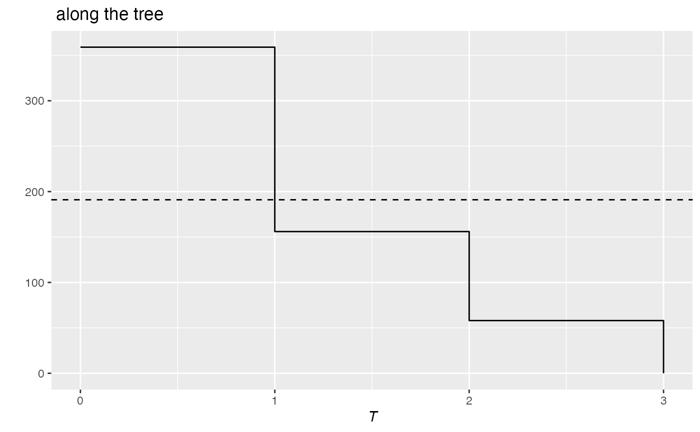

Phylogenetic entropy or diversity.
PhyloValue.RdEntropy or diversity against the height of the phylogenetic or functional tree.
Usage
is.PhyloValue(x)
# S3 method for class 'PhyloValue'
autoplot(object, xlab = expression(italic("T")), ylab = NULL, main = NULL,
col = ggplot2::GeomLine$default_aes$colour,
lty = ggplot2::GeomLine$default_aes$linetype,
lwd = ggplot2::GeomLine$default_aes$size,
...)
# S3 method for class 'PhyloValue'
plot(x, xlab = expression(italic("T")), ylab = NULL, main = NULL, ...)
# S3 method for class 'PhyloValue'
summary(object, ...)Arguments
- x
An object of class
PhyloValue, includingPhyloDiversityandPhyloEntropyobjects.- xlab
The X axis label, "T" by default for Time.
- ylab
The Y axis label. if
NULL(by default), "Entropy" or "Diversity" or nothing is chosen according to the object class.- main
The main title of the plot. if
NULL(by default), a default value is used.- object
A
PhyloValueobject to be summarized.- col
The color of the geom objects. See "Color Specification" in
par.- lty
The type of the lines. See
lines.- lwd
The width of the lines. See
lines.- ...
Additional arguments to be passed to
plot.
Details
PhyloValue objects are the result of PhyloApply.
Examples
# Load Paracou data (number of trees per species in two 1-ha plot of a tropical forest
# and their taxonomy)
data(Paracou618)
# Calculate richness along the tree
# (Cuts are 1=species, 2=genus, 3=family)
summary(r <- PhyloApply(Paracou618.Taxonomy, FUN=Richness,
NorP=Paracou618.MC$Ns, Normalize=TRUE))
#> Richness applied to Paracou618.MC$Ns along the tree: Paracou618.Taxonomy
#>
#> Results are normalized
#>
#> The average value is: 191
#>
#> Values along the tree are:
#> 1 2 3
#> 359 156 58
autoplot(r)
